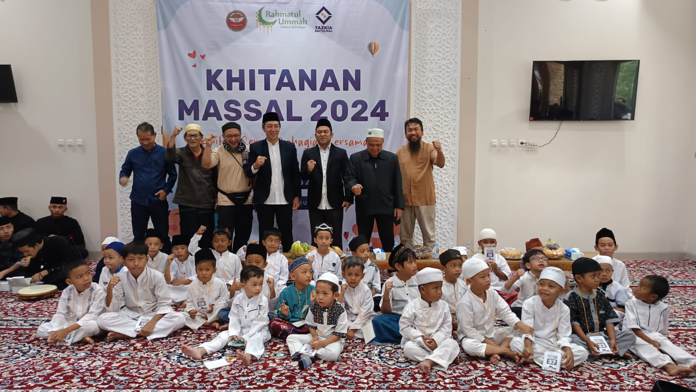
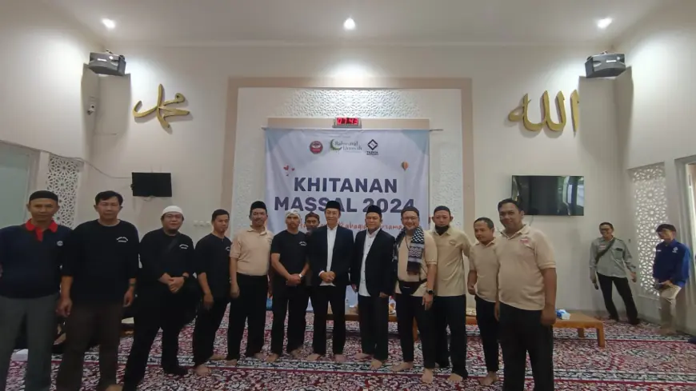

Tentang Kami
Layanan Kesehatan Baitul Mal Tazkia adalah platform
berbasis web yang hadir untuk memudahkan
masyarakat dalam mengajukan bantuan kesehatan secara cepat dan terorganisir. Melalui layanan
pemesanan ambulans gratis, peminjaman kursi roda, dan pendaftaran khitanan massal, kami berupaya
menjembatani kebutuhan kesehatan dengan proses yang lebih praktis dan transparan.
Sistem ini dirancang agar setiap pengajuan dapat dipantau statusnya, mulai dari proses verifikasi
hingga penyelesaian, sehingga masyarakat merasa lebih tenang dan terbantu dalam situasi mendesak
maupun kegiatan kesehatan yang terencana. Dengan mengedepankan kemudahan akses, efisiensi, dan
kepedulian sosial, layanan ini menjadi wujud komitmen Baitul Mal Tazkia dalam memberikan manfaat dan
pelayanan terbaik bagi masyarakat.